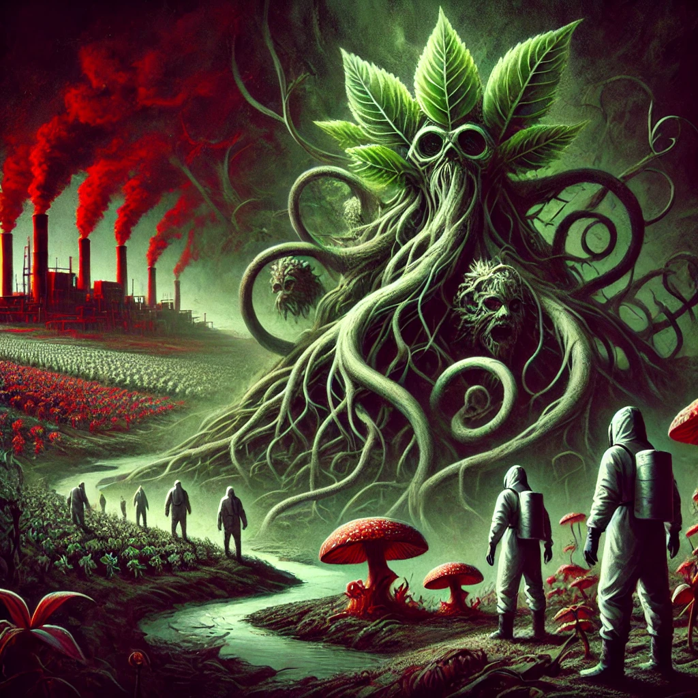

SCALE
목차
작가
김초엽
출판일
2019.05.10.
감상평에 대한 AI그림
작중에서 '모스바나'라는 식물이 나오는데, 이 식물과 더스트 시대에서 살아남은 사람들과의 유사성을 생각해보면서 책을 보다보면 현실 세계의 우리와 다를바 없지 않는가 라는 생각이 든다. 이 책을 보니 지구 온난화 문제를 더욱 심각하게 받아들여야 한다는 것, 우리의 삶의 태도를 반성하는 것 두 가지를 생각하게 되었다.

감상평에 대한 AI평가
지구 온난화 문제와 우리의 생활 방식에 대한 반성은 매우 중요한 메시지일 것 같아요.
우리는 자연과 상호작용하며 살아가지만, 때로는 그것을 너무 당연하게 여겨버리기도 하죠. 책 속에서 나타나는 환경 변화가 우리에게 던지는 경고를 더 진지하게 받아들여야 할 때인 것 같습니다.
이 책을 통해 삶의 태도를 반성하고, 환경에 대한 책임감을 느끼게 되었다니, 책이 정말 강력한 영향을 미친 것 같네요.